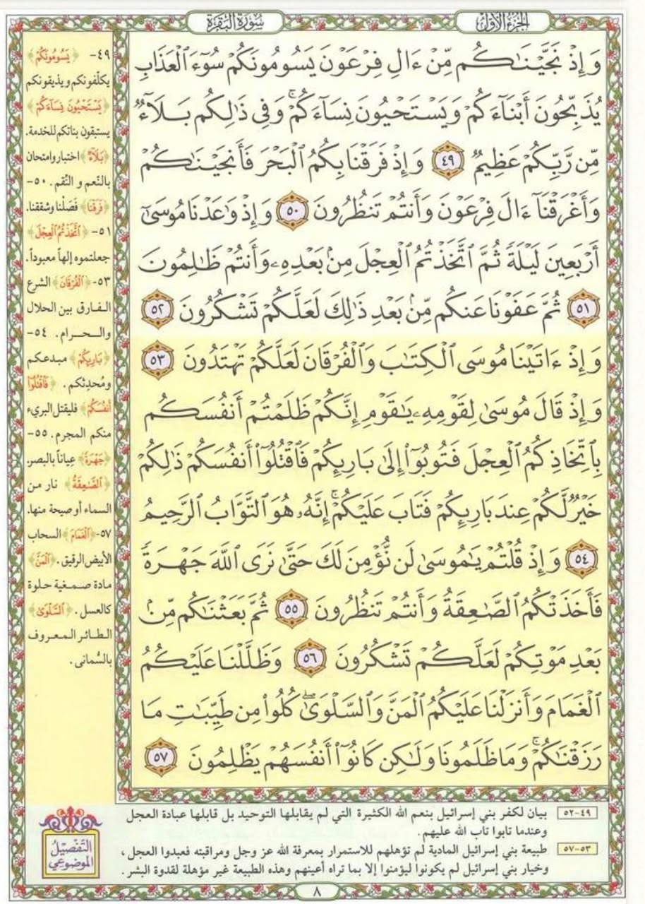

المحاضرة الخامسة: مراجعة التليين، أساسيات أثناء الحفظ، أساسيات ما بعد الحفظ، والرابط اللفظي 🧠📖✨
نتناول في هذه المحاضرة أربعة محاور رئيسية: مراجعة أساسيات ما قبل الحفظ والتليين، الدخول في تفاصيل أساسيات أثناء الحفظ (القراءة البصرية وتقسيم الآيات وبروتوكول النسيان)، فهم أساسيات ما بعد الحفظ (منحنى النسيان وجدول المراجعات الست)، وتطبيق الرابط اللفظي الذكي على صفحة 8 من سورة البقرة.
مراجعة أساسيات ما قبل الحفظ والتليين 🧠🚪
استذكار لأهم قواعد التهيئة التي درسناها في المحاضرة الرابعة قبل فتح المصحف
📌 أولاً: الخمس نقاط الأساسية لما قبل الحفظ:
إضاءة مريحة، هدوء تام، جلسة مستقيمة، وعزل المشتتات كالهاتف والشاشات.
استحضار نية صادقة تنشط 36 رابطاً عصبياً حسياً ووجدانياً في الدماغ.
توجيه صريح للعقل الباطن: "سأحفظ بتركيز تام وسرعة، وعقلي قادر على التثبيت".
استحضار معادلة: الصفحة 15 سطراً، كل سطر دقيقة، إذن الصفحة في 15 دقيقة فقط.
إحماء الدماغ وتهيئة النص بالخطوات الخمس قبل محاولة الحفظ المباشر.
✨ ثانياً: الخطوات الخمس للتليين (Brain Softening / Warm-up):
خطوة التليين تجعل الدماغ يمتص الآيات بسلاسة دون مقاومة؛ فالدماغ يرفض حفظ ما يجهل معناه وصوته:
السماع
الاستماع المتقن للصفحة بصوت قارئ متقن.
التفسير
قراءة أو سماع تفسير معاني الآيات بدقة.
الشرح الذاتي
أن أشرح لنفسي الآيات بأسلوبي وفهمي الخاص.
التلبيط والربط
ربط المعاني وترتيب تسلسل القصة والمواضيع.
حفظ رؤوس الآيات
حفظ بداية كل آية واختبار النفس فيها قبل حفظ المتن.
أساسيات أثناء الحفظ (التقنية العصبية للحفظ المتقن) ⚡👁️
كيف يتعامل دماغك مع الكلمات والآيات أثناء جلسة الحفظ الفعلية
القراءة بالعينين فقط (بدون صوت في البداية) 👁️❌🔊
عندما نبدأ في حفظ النص لأول مرة، لا نقرأ بصوت إطلاقاً، بل نقرأ بأعيننا فقط:
عيني تمشي على الكلمات ومخي يقرأ ويصوّر موضع الحروف؛ الدماغ يلتقط صورة فوتوغرافية للصفحة والكلمات دون تشويش.
لأن التحدث بالصوت يُجبر الدماغ على تشغيل مدخلين في آن واحد (بصري + سمعي)، مما يربك مراكز المعالجة العصبية ويشتت طاقة التركيز في لحظة التقاط المعلومة!
التعامل مع حجم الآيات: الآية القصيرة vs الآية الكبيرة 📏
القرآن الكريم يضم آيات متباينة في الطول، فكيف تبرمج عقلك للتعامل مع كل نوع؟
تُحفظ كوحدة واحدة متكاملة ✨
تُنظر إليها العين ككتلة واحدة، تُقرأ بالعين مراراً حتى تُطبع في الذهن، ثم تُسمّع مباشرة كاملة دون تجزئة.
طريقة التجزئة والجمع التراكمي 🧩
1. نحدد مواضع الوقف في الآية.
2. نحفظ الجزء الأول حتى الوقف الأول بالعين.
3. نحفظ الجزء الثاني ثم نربطهما معاً: (الجزء 1 + 2).
4. نحفظ الجزء الثالث ثم نجمعه مع ما قبله: (الجزء 1 + 2 + 3) وهكذا تراكمياً حتى ختام الآية.
مرحلة التسميع: التسميع بصوت مسموع 📢🎧
بعد الانتهاء من تخزين الآية بصرياً بالعينين، ننتقل فوراً إلى التسميع: وهنا يجب أن نُسمّع بصوت واضح مسموع!
العلة العلمية: الآن جاء دور تشغيل الإدخال السمعي (Auditory Input) لربط الصورة المحفورة بالعين مع نغمة الصوت ومخارج الحروف، فيتثبت الحفظ بمسارين عصبيين مستقلين.
ماذا أفعل عندما أنسى كلمة أثناء التسميع؟ 🤔💡
إياك أن تفتح المصحف فوراً بمجرد تعثرك! فتح المصحف سريعاً يعوّد الدماغ على الكسل والاعتماد الخارجي. اتبع هذا البروتوكول الثلاثي:
1. العصف الذهني (Brainstorming)
ما هو العصف الذهني؟ هو محاولة التذكر واستخدام عدة طرق وزوايا لاستدعاء المعلومة من خلايا الذاكرة وإعطاء المخ مهلة للتنقيب.
2. التذكر بالفهم والمعنى
استرجع خطوة التليين والتفسير التي قمت بها مسبقاً؛ ما هو السياق؟ ما هي الكلمة المنطقية التي تكمل هذا المعنى القرآني العظيم؟
3. إغلاق العينين وتخيل الصفحة
غمّض عينيك وحاول استحضار الصورة الذهنية للصفحة؛ أين كان موضع الكلمة؟ في أول السطر أم وسطه؟ شكل رسمها ولونها الذهني.
أساسيات ما بعد الحفظ: منحنى النسيان والمراجعات الست 📉⏰
كيف تنقل ما حفظته من الذاكرة قصيرة المدى إلى الذاكرة الدائمة طويلة المدى مدى الحياة
📉 ما هو منحنى النسيان (Forgetting Curve)؟
منحنى النسيان يشير إلى المواعيد والفترات الزمنية الدقيقة التي يفقد المخ فيها المعلومات بعد حفظها إذا لم تتم مراجعتها.
• الذاكرة قصيرة المدى: هي المستودع المؤقت الذي تُحفظ فيه المعلومات التي نتلقاها حديثاً، إما أن يتم تثبيتها ونقلها إلى الذاكرة طويلة المدى، أو تتلاشى وتُمحى تماماً!
• يحتاج الدماغ إلى تكرار متباعد (Spaced Repetition) لتثبيت مسارات السينابس العصبية.
قبل انقضاء الساعة الأولى لإنقاذ الـ 50%!
خلال أول 24 ساعة لتأكيد الحفظ اليومي.
لمنع هبوط التثبيت إلى 30%.
حماية الحفظ من الاندثار الكامل (0%).
الانتقال الفعلي للذاكرة طويلة المدى.
ختم الحفظ الدائم وتثبيته كاسمك تماماً!
📅 حاسبة جدول المراجعات الست الذكية:
احسب مواعيد مراجعاتك الست تلقائياً من لحظة الحفظ الحالية
القرآن الكريم يحتاج لجدول منظم لمزامنة مراجعة القديم مع حفظ الجديد، وهذا ما سننسقه ونحدده بالتفصيل في المحاضرات القادمة لتمكينك من الحفظ والمراجعة معاً بلا تشتت.
الاستمرار اليومي على تمارين التركيز يرفع كفاءة الدماغ العصبية، مما يضاعف سرعة حفظك ويقلل معدل النسيان الطبيعي للمعلومات إلى أدنى حد!
الرابط اللفظي في القرآن الكريم (سورة البقرة صفحة 8) 📖🔗
كيف ترتبط الآيات التسع بنمط لفظي إيقاعي يرسخ الصفحة في دقائق معدودة
🔗 متى نلجأ للرابط اللفظي بدلاً من الرابط الموضوعي؟
في المحاضرة السابقة تعرفنا على الرابط الموضوعي في صفحة مقسمة إلى مواضيع ملونة واضحة (مثل صفحة 27). ولكن في أحيان أخرى نلتقي بصفحات لها طبيعة مختلفة:
- إما أن تكون الصفحة شديدة التشعب: مليئة بمواضيع وتفاصيل كثيرة جداً يصعب حصرها في 2 أو 3 كتل موضوعية.
- أو تكون الصفحة كلها تدور حول قصة واحدة أو موضوع ممتد: وتحتوي على مفاتيح لفظية وروابط تكرار جلية.
👈 هنا نلجأ فوراً إلى الرابط اللفظي الذكي الذي يستغل تكرار وبلاغة ألفاظ القرآن لبناء شبكة حفظ لا تسقط أبداً!

لاحظ التسلسل اللفظي لرؤوس الآيات في صفحة 8: تكرار كلمة "وَإِذْ" ثلاث مرات، تليها "ثُمَّ"، ثم ثلاث مرات "وَإِذْ"، تليها "ثُمَّ"، والختام بـ "وَظَلَّلْنَا"!
(3 "وَإِذْ" ➜ "ثُمَّ") ➕ (3 "وَإِذْ" ➜ "ثُمَّ") ➕ "وَظَلَّلْنَا" 🌟
تسع آيات فقط، عندما تفهم تفسيرها وتربط بين ألفاظها يترسخ ترتيبها في عقلك كأنه نغم متسلسل!
تفصيل رؤوس الآيات الـ 9 وروابطها اللفظية الذهنية:
بداية التذكير بنعم الله: النجاة من فرعون وعذابه.
🔗 الرابط اللفظي: النجاة كانت بالبحر (نجيناكم ➜ البحر!).
الميقات واتخاذ العجل من بعد موسى عليه السلام.
العفو الإلهي العظيم بعد فتنة اتخاذ العجل.
إنزال التوراة والفرقان للهداية.
🔗 الرابط اللفظي: بعد أن آتاه الله الكتاب قال موسى لقومه.
🔗 الرابط اللفظي: لما قال موسى، رد قومه: وإذ قلتم يا موسى!
البعث بعد أخذ الصاعقة لهم.
خاتمة الصفحة: إكرام التظليل بالغمام وإنزال المن والسلوى.
🧪 تمرين تفاعلي: اختبر استحضار تسلسل الرابط اللفظي (9 آيات)
اضغط لإخفاء الرؤوس وحاول تذكر الترتيب النمطي غيباً
اختبار استيعاب المحاضرة الخامسة 🎯
5 أسئلة ذكية لقياس فهمك لتقنيات أثناء وبعد الحفظ والرابط اللفظي
1. لماذا نقرأ في بداية الحفظ بأعيننا فقط بدون صوت؟
2. كيف نحفظ الآية الكبيرة (أكثر من سطرين) بطريقة صحيحة؟
3. إذا نسيت كلمة أثناء التسميع، ما هو الإجراء الأول الصحيح قبل فتح المصحف؟
4. وفقاً لمنحنى النسيان، كم نسبة المعلومات التي يفقدها المخ للشخص الطبيعي في خلال أول ساعة؟
5. ما هو النمط اللفظي البصري المميز لرؤوس الآيات التسع في صفحة 8 من سورة البقرة؟
أحسنت صنعاً! استيعاب استثنائي للمحاضرة الخامسة بنسبة 100%!
أنت الآن تمتلك منظومة الحفظ المتكاملة (قبل وأثناء وبعد) ومفاتيح الروابط اللفظية والموضوعية.
الواجب العملي التراكمي (المحاضرة 05) 📝🏆
الواجب تراكمي يدمج مهارات المحاضرات السابقة مع تكليف الحفظ وتسجيل الزمن
- 1. تمارين التنفس البطني: تنفس 4-4-4 لمدة 3 إلى 5 دقائق صباحاً قبل الحفظ (محاضرة 1).
- 2. تمارين الرسم والتلوين: رسم أشكال متناظرة وتلوينها بكلتا اليدين معاً (محاضرة 1).
- 3. تمارين الكتابة باليدين: كتابة معكوسة وعادية باليد اليمنى واليسرى معاً (محاضرة 2).
- 4. تمارين زيادة التركيز: تمرين القراءة المعكوسة وتمرين عد الكلمات (محاضرة 3).
- 5. تمارين الأصابع واليد الخمسة: تمارين الإحماء ومطابقة الأصابع لفك التيبس (محاضرة 4).
تطبيق خطوات ما قبل الحفظ (المكان، النية، التوجيه، التليين) ثم حفظ صفحة بالرابط اللفظي أو الموضوعي (مثل صفحة 8 أو 27 من سورة البقرة).
شغّل المؤقت عند بدء الحفظ وسجّل بالدقيقة والثانية الزمن المستغرق لحفظ الصفحة كاملة، تمهيداً لقياس تطورك ومقارنته بالمعادلة (15 دقيقة).
تطبيق المراجعة الأولى بعد نصف ساعة، ثم جدولة مراجعات الأيام اللاحقة لنقل الصفحة للذاكرة طويلة المدى.
استمرارك اليومي هو كلمة السر لامتلاك عقل حديدي وذاكرة لا تشيخ!
في المحاضرة القادمة، سنبدأ بتنسيق جداول المراجعة التراكمية لمزامنة الجديد مع القديم بإذن الله.